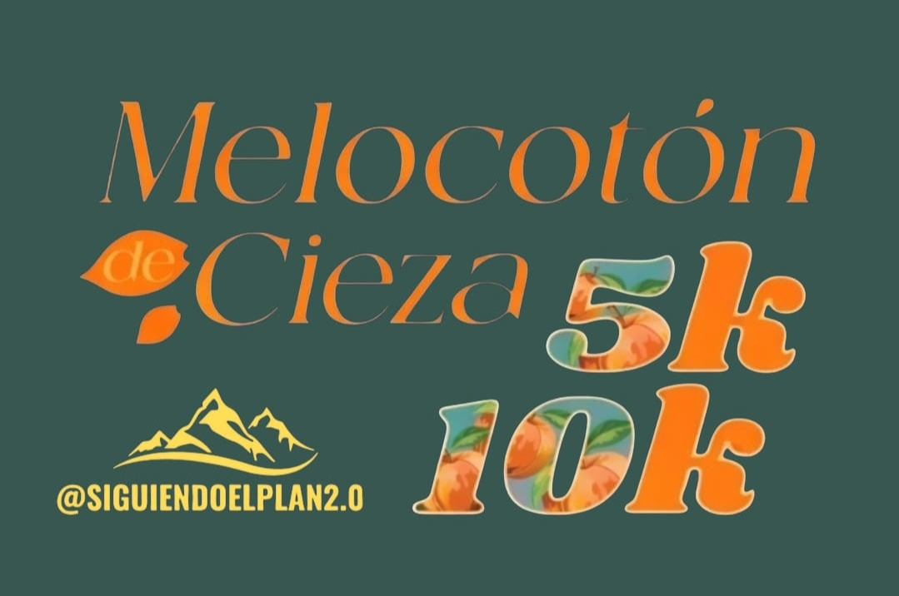
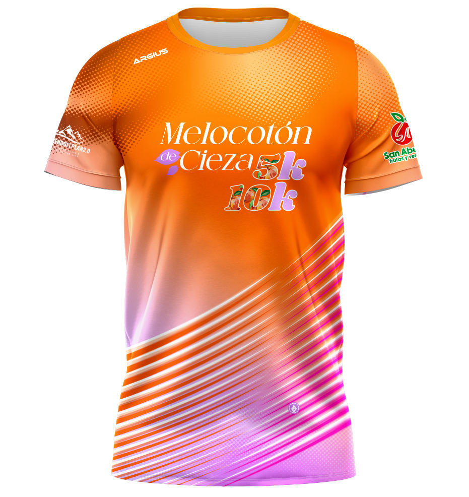
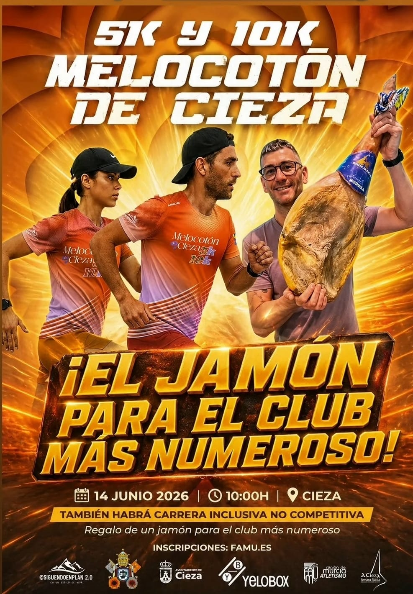
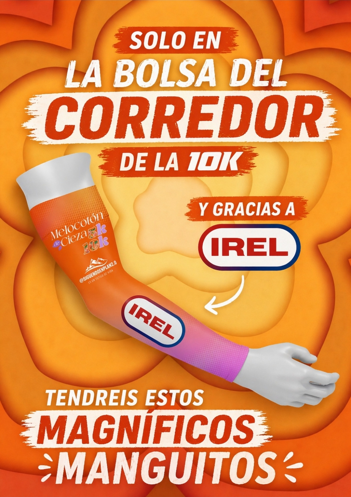
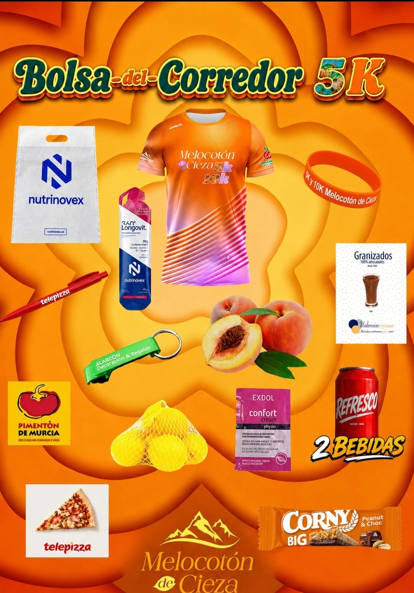
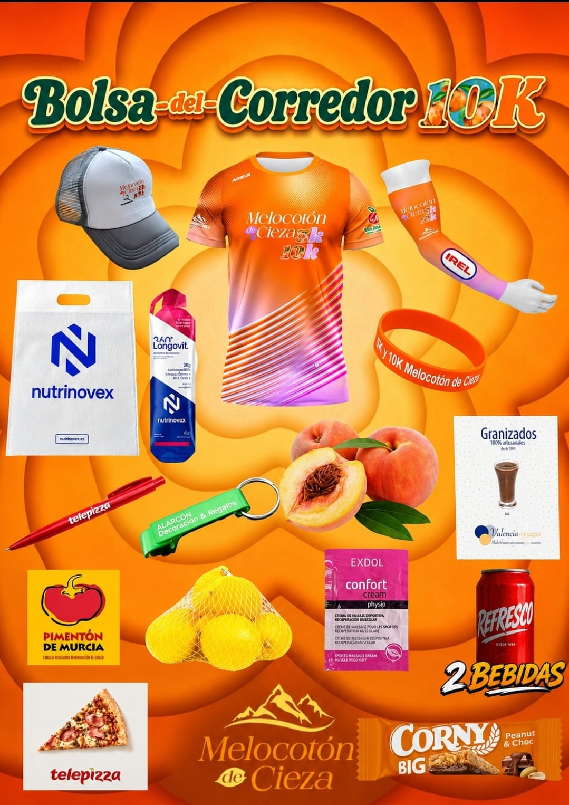
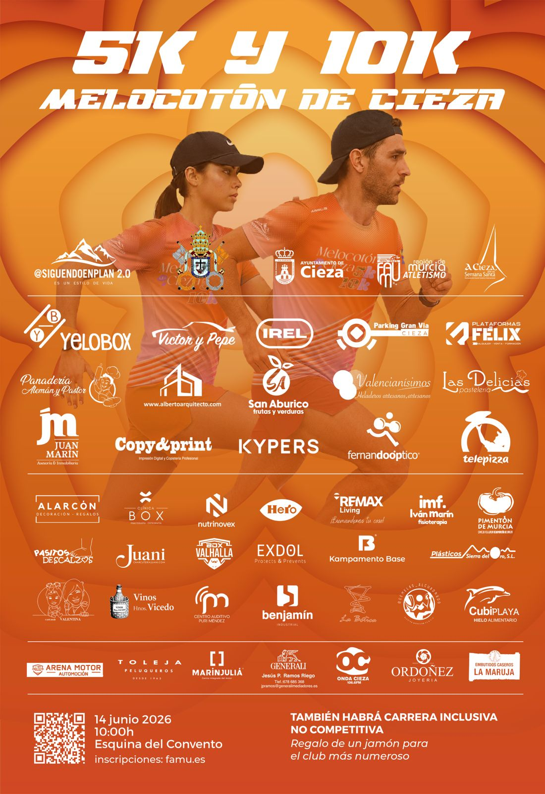
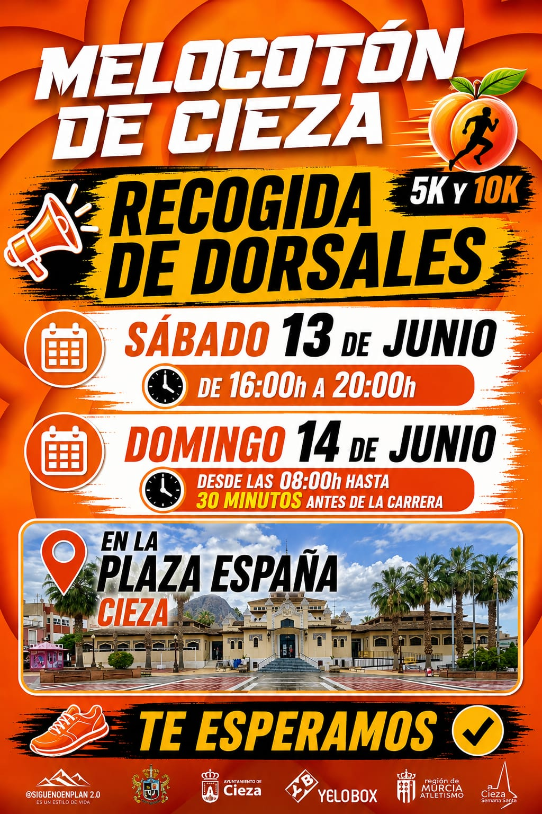

Cartel oficial — 1.ª edición 2026

5K y 10K comparten el mismo circuito urbano de Cieza. La inclusiva es una categoría no competitiva y gratuita, con su propio recorrido.
Una vuelta al circuito (5K) o dos vueltas (10K) — mismo recorrido, doble distancia
Recorrido adaptado, independiente del circuito principal. Para todos.
Camiseta técnica, bolsa del corredor, premios y regalos de patrocinadores.







Sin ellos esta carrera no existiría.


El formulario oficial de inscripción y pago se gestiona en Alcanzatumeta. La FAMU valida la prueba y la incluye en su calendario federado.
Formulario único de inscripción para 5K y 10K. Cronometraje y dorsales gestionados desde aquí.
Inscribirme ahoraCarrera incluida en el calendario federado de la Federación de Atletismo de la Región de Murcia para junio de 2026.
Ver calendario FAMU